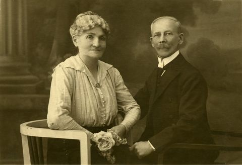

Richard Schwarz
1898–1898
Life events
| Born | |
|---|---|
| Died | |
| Buried |
Family
Parents

Moses Moritz Schwarz1856–1938
Leonore Lotti Fuchs1859–1947
Richard Schwarz1898–1898
Photos

Moses Moritz Schwarz
Richard Schwarz

Moses Moritz Schwarz
Richard Schwarz
Richard Schwarz